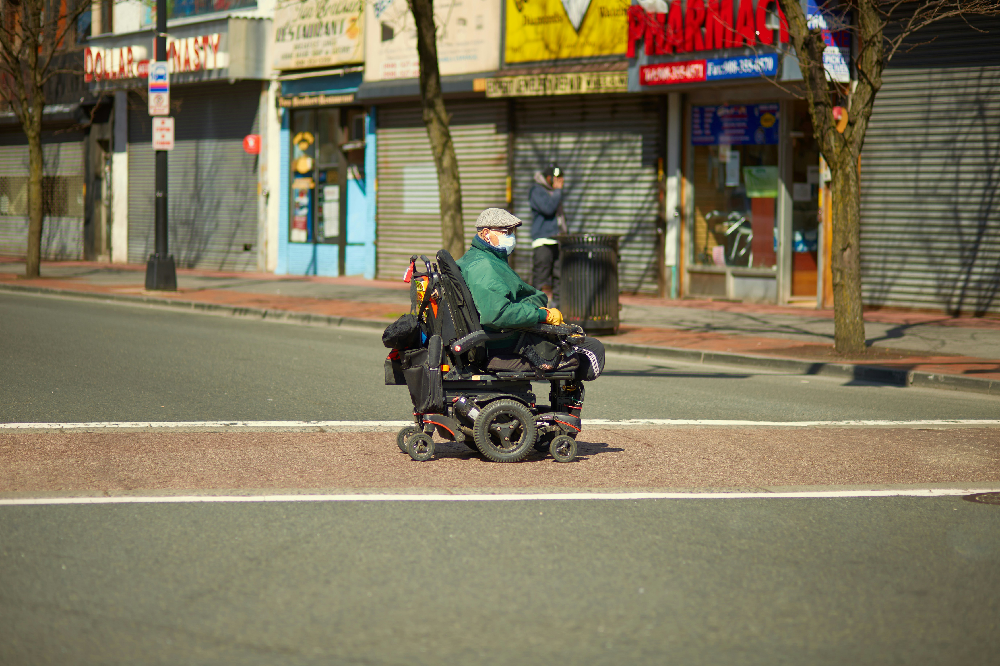
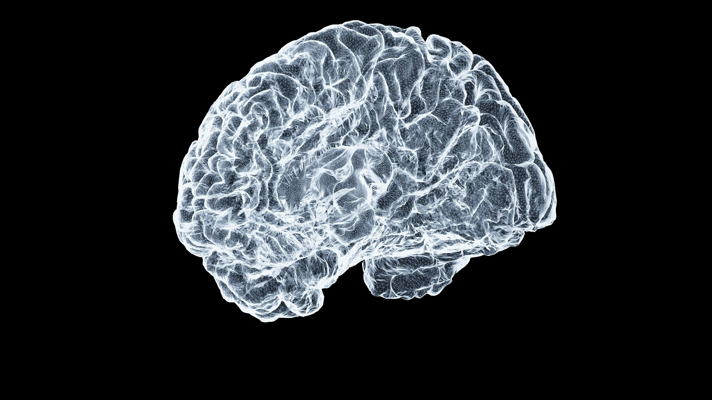

Typically, mobile vehicles follow the same paths repeatedly, resulting in a common path bounded with some variance. These paths are often punctuated by branches into other paths based on decision-making in the area around the branch. This work applies a statistical methodology to determine decision-making regions for branching paths. An average path is defined in the proposed algorithm, as well as boundaries representing variances along the path. The boundaries along each branching path intersect near the decision point; these intersections in path variances are used to determine path-branching locations. The resulting analysis provides decision points that are robust to typical path conditions, such as two paths that may not clearly diverge at a specific location. Additionally, the methodology defines decision region radii that encompass statistical memberships of a location relative to the branching paths. To validate the proposed technique, an off-line implementation of the decision-making region algorithm is applied to previously classified wheelchair path subsets. Results show robust detection of decision regions that intuitively agree with user decision-making in real-world path following. For the experimental situation of this study, approximately 70% of path locations were outside of decision regions and thus could be navigated with a significant reduction in user inputs.


Traumatic brain injury (TBI) is a leading cause of morbidity and mortality in children and adolescents. Mild TBI (mTBI), also known as concussion, accounts for approximately 75% of all TBIs. While the majority of pediatric mTBI patients recover fully, a significant subset experience persistent post-concussive symptoms (PPCS) lasting weeks to months after injury. Early identification of children at risk for PPCS is crucial for timely intervention and management. This study aims to develop a machine learning model to predict the clinical diagnosis of PPCS in pediatric patients following mTBI. We collected a comprehensive dataset including demographic information, injury characteristics, clinical assessments, and neuroimaging data from pediatric mTBI patients. Various machine learning algorithms, including decision trees, support vector machines, and neural networks, were evaluated for their predictive performance. The best-performing model achieved an accuracy of 85%, sensitivity of 80%, and specificity of 90% in predicting PPCS diagnosis. Key predictors identified by the model included age at injury, initial symptom severity, and specific neuroimaging biomarkers. These findings suggest that machine learning approaches can effectively predict PPCS in pediatric mTBI patients, potentially guiding clinical decision-making and personalized treatment strategies.
This research focuses on developing advanced situational awareness systems for visually impaired individuals, leveraging cutting-edge technologies such as computer vision, sensor fusion, and machine learning. The goal is to create wearable devices that can provide real-time feedback about the surrounding environment, enhancing mobility and safety. The system integrates data from cameras, LiDAR, and ultrasonic sensors to detect obstacles, recognize landmarks, and interpret traffic signals. Machine learning algorithms are employed to analyze the sensory data and generate intuitive audio or haptic feedback for the user. Preliminary trials with visually impaired participants have shown promising results, with users reporting increased confidence and independence in navigating complex environments. Future work will focus on refining the algorithms, improving hardware ergonomics, and conducting larger-scale user studies to validate the effectiveness of the system in diverse real-world scenarios.